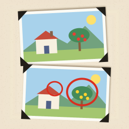

うちの写真でまちがいさがし
家族で早さくらべ
家族の写真から間違い探しを作り、1台の iPhone・iPad を順番に回して、だれがいちばん早く見つけるかをくらべるアプリです。
- 写真を1枚えらぶと、「おまかせ」で5か所の間違いが入ります（やさしい・ふつう・むずかしい）
- 写真をたたくと、その物の形を取り、自分で変えられます（色を変える・消す・左右を返す・大きくする・増やす）
- 間違いごとに、見つけにくさを3段階で出します。ほとんど見えない所は「見えにくすぎる」と知らせます
- 家族で早さくらべ：「次は◯◯の番」の幕が出たら、その人だけが見て解きます。小さい子には、ハンデ（秒）をつけられます
- まちがえてたたくと＋5秒。全員が終わると、順位の紙が出ます。問題ごとに、人ごとのいちばん早い記録が残ります
- 2枚の写真のどちらをたたいても当たりです。当たりは、変えた物の形そのもの（少し外れても当たり）です
- ひとりでも遊べます。答えつき・答えなしの画像にして送れます
- はじめから、見本の1問（アプリのために描いた絵）が入っています
- 写真の加工は、全部 端末の中で行います。写真をサーバーに送りません。登録・課金・回数の上限はありません